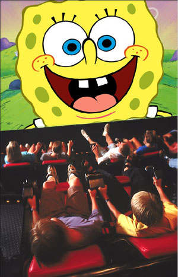
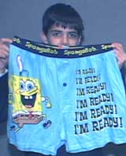
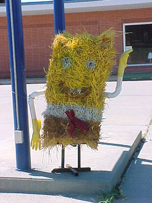
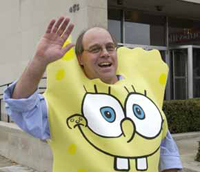
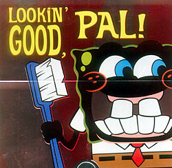
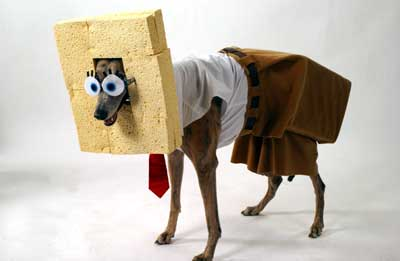
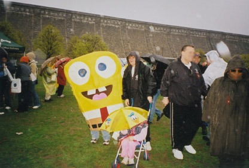
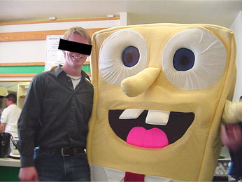
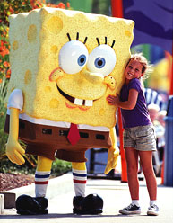
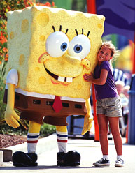

|
 SpongeBob SquarePantsBetween 1999 and 2002, the number of people taping or TiVo-ing SpongeBob SquarePants off Nickelodeon eclipsed those recording South Park and The Simpsons put together. Rarely has an animated cartoon series intended for toddlers aged two-to-eleven so nimbly insinuated itself into the American public meme, or caused so many problems for parents, media corporations and race relations. The show has inspired over $800 million worth of merchandise since its inception, and SpongeBob's porous, yellow face beams optimistically from the number-one selling brands of Kraft Macaroni & Cheese, Band-Aid bandages, and frozen fruit juice popsicles. Early on, the creative force behind SpongeBob came to include Underworld cartoonist Kaz and Sam "Magic Whistle" Henderson, both of whom wrote and storyboarded numerous episodes in their own superb, trademark styles. SpongeBob himself is voiced by standup comedian and Mr. Show veteran Tom Kenny, who served time as the Announcer and Mayor characters on The Powerpuff Girls. Mister Krabs is voiced by Clancy Brown, the looming prison guard from The Shawshank Redemption -- the one Andy Dufresne assists with his income taxes. Squidward is voiced by Rodger Bumpass, who's been doing voices for cartoons since The Jetsons in 1962. Guest stars have included Match Game regular Charles Nelson Reilly, Ernest Borgnine, Tim Conway, John Lurie and director Jim Jarmusch -- all of whom share the cartoon stage with the musical stylings of Tiny Tim, Ween, and Pantera. Among its loyal fans: Dennis Miller, Bruce Willis, Tom Waits and Jerry Lewis. Troubling SpongeBob "incidents" are ever present, and can strike even the sleepiest of communities without warning. On April 12, 2003, sheriff's deputies were called to the El Paso Coliseum in Texas after hundreds of parents and children stormed from the palace during an ice follies, demanding their money back. They claimed that SpongeBob had been expected to star in the show, but in fact he was only a small part of the ice-skating exhibition. The furor disgraced the ice skating exhibition, and to this day local politicians continue to invoke memories of the "SpongeBob Riots" during election campaigns. The half-hour program is an amalgamation of traditional cel animation, live action puppet shows, digitized video elements and computer enhanced cinematography. Musically, the soundtrack consists of pitch-shifted, tiki Hawaiian cues. It targets a generation of youngsters without an immediate awareness of Monty Python's Flying Circus on PBS or the original Warner Bros. Merrie Melodies cartoons. It tickles children of all ages by catering to their developing capacities for abstract thought, providing existential underwater situations (hereinafter referred to as "nautical nonsense") and fully fleshed-out supporting characters like Squidward Tentacles, Patrick Star, Sandy Cheeks, and Eugene H. Krabs. Think of the cast and crew as contemporary child development specialists who prepare young people for an artistically sound and socially adjusted life by encouraging them to act out whatever surreal fantasies they choose. While Dora is off exploring friendship and multicultural melting pots,
while Dexter beats off into a laboratory test tube, as The Powerpuff
Girls deconstruct threadbare id/ego/superego subdivisions of the blonde
bimbos, red-headed control freaks and indignant, dykeified brunettes within
us all, SpongeBob and his colleagues skirt conventional narrative structures
by staying home, indulging themselves in unique hobbies and isolated personal
pursuits. SpongeBob blows bubbles out the window of his private pineapple-shaped
home The
creator of SpongeBob, Stephen Hillenburg, earned his degree in 1984: in "natural
resource planning and interpretation," with an emphasis in marine resources.
He taught marine biology at the Orange County Marine Institute in California,
where he noticed his young students' enthusiasm for the creatures which live
in tide pools: sponges, starfish, octopi and crabs, chief among them. While
pitching his idea for Nickelodeon, he played the "At first I drew a few natural sponges -- amorphous shapes, blobs -- which was the correct thing to do biologically as a marine science teacher," he told the Washington Post. "Then I drew a square sponge and it looked so funny. A funny, nerdy, squeaky-clean square. I think as far as cartoon language goes he was easier to recognize. He seemed to fit the character type I was looking for." It's true: SpongeBob is currently the most dangerous weapon in the Viacom media sea. Nine million satellite subscribers lost access to SpongeBob during a dispute with EchoStar, owner of the Dish Network. All Viacom had to do was yank SpongeBob, MTV's The Real World, and Survivor from millions of viewers in Los Angeles, New York and Miami to demonstrate their power of positive thinking. After a two-day blackout, Viacom secured everything it wanted from EchoStar, including a rate increase of six cents per month, per subscriber. In a show of disdain, work-released inmates from the Montgomery County Jail in Norristown, Pennsylvania smuggled drugs into their prison by way of SpongeBob cards and stickers containing small packets of heroin. Some of these stickers were the same ones protested by flabbergasted Wal-Mart patrons in March of 2004, when a printing error led to the publication of a Valentine's Day greeting card featuring a black SpongeBob SquarePants. Officials at the American Greetings Corporation felt deeply humiliated and "fell out of their chairs" when they saw the printed images leering back at them from store shelves: SpongeBob with his trademark big teeth and wide eyes, looking suspiciously like the offensive images of African-Americans portrayed in minstrel shows from decades past. "Culturally, the guys on press in China wouldn't have the faintest idea of who a SpongeBob was or who a black SpongeBob was," said David Blinderman, director of global product development. Wal-Mart stores offered refunds. The Spongebob Squarepants Theme Song, heard at the opening of every show, invites children to sing along with an oil rendering of "Painty the Pirate," a framed portrait with a cutaway human mouth like the kind observed during fake interviews on Late Night with Conan O'Brien. The paining was done by Chinese artist Calvin Liang, who graduated from the Shanghai Academy of Fine Arts -- one of China's most prestigious and competitive art academies. Liang designed sets for operas and musical dramas for the Canton Opera Institute before emigrating to the United States in 1987, where he continued his profession as a full-time artist developing visuals for Walt Disney Studios and Nickelodeon. Painty the Pirate, Tony Millionaire's Maakies, and the Sea Captain from The Simpsons were an unstoppable triumvirate of motivating forces responsible for the surge of pirate enthusiasm among culture-starved twentysomethings during 2000 and early 2001. This in turn led to a swelling of popular seafaring phrases like "Arrrrrrr" (which quickly grew as tiresome as "Whassup??") and served as the precursor to salted popcorn snack treats like Pirate's Booty. Our nation's passing fancy with Seinfeldian puffy shirts, swashbuckling foppery, and our tepid predilection for pegged legs mercifully hit the skids with the release of feature films like The Pirates of the Carribean and Master and Commander, which showed audiences around the world that life at sea could also be excruciatingly insipid without immediate access to the buttplug-shaped TiVo remote. Watch for a resurgence of nautical themes in another three years or so, now that every marketing team in the entertainment business knows what rattles the viewer's crossbones. Early in 2002, homosexual rumors persisted as SpongeBob reached the upper echelon of status in the gay community. In numerous episodes, he's observed holding hands and promenading (yes, actually skipping and prancing) around the town square with his best friend and neighbor Patrick Star. Not even Squidward Tentacles escaped the controversy, as mounting anecdotal evidence pointed toward his fondness for classical music, practicing the clarinet, and taking long bubblebaths. As a result, novelty shops catering to gay clientele in New York and Atlanta regularly experience difficulty keeping SpongeBob memorabilia in stock. Tom Kenny skirted the issue on Late Night with Conan O'Brien: "Whether [SpongeBob] is intended to be a gay character or not, it's never been addressed by us on the show." He went on to add that all the main characters are hiding "horrible secrets" of their own. Meanwhile, a different (but equally horrific) urban legend swept elementary schools across the nation: that a retarded child drowned while trying to reach SpongeBob's pineapple-shaped house under the sea. In January 2004, a single-sphered SpongeBob SquarePants balloon traveled over 800 miles at a height of 10,000 feet from Central Mexico to southeast Texas, thirty miles southwest of Houston. There was a note attached, wishing the recipient a merry Christmas. Fort Bend County Office of Emergency Management Staff Meteorologist Ron Stagno announced the balloon probably made the journey in two days. |
 overlooking
the
sea floor of Bikini Bottom. Or he sits in a box and plays pretend. Or he goes
"jellyfishing" with a butterfly net, capturing undulating sea creatures
and squirting the jam from their stinging tentacles onto slices of white bread
for lunch. And he's not one of those "how does this guy manage to stay
alive" type characters, either: he supports himself by working a regular
job as a fry cook at the Krusty Krab restaurant. SpongeBob pays his rent, goes
to school to learn how to drive a boat, and takes care of his pet Gary: a sea
snail whose emotions are conveyed exclusively through the squeaks and meows
of a contented house cat. In Bikini Bottom, educational television is widely
regarded as punishment.
overlooking
the
sea floor of Bikini Bottom. Or he sits in a box and plays pretend. Or he goes
"jellyfishing" with a butterfly net, capturing undulating sea creatures
and squirting the jam from their stinging tentacles onto slices of white bread
for lunch. And he's not one of those "how does this guy manage to stay
alive" type characters, either: he supports himself by working a regular
job as a fry cook at the Krusty Krab restaurant. SpongeBob pays his rent, goes
to school to learn how to drive a boat, and takes care of his pet Gary: a sea
snail whose emotions are conveyed exclusively through the squeaks and meows
of a contented house cat. In Bikini Bottom, educational television is widely
regarded as punishment. ukulele
and sang a version of the theme song.
ukulele
and sang a version of the theme song.